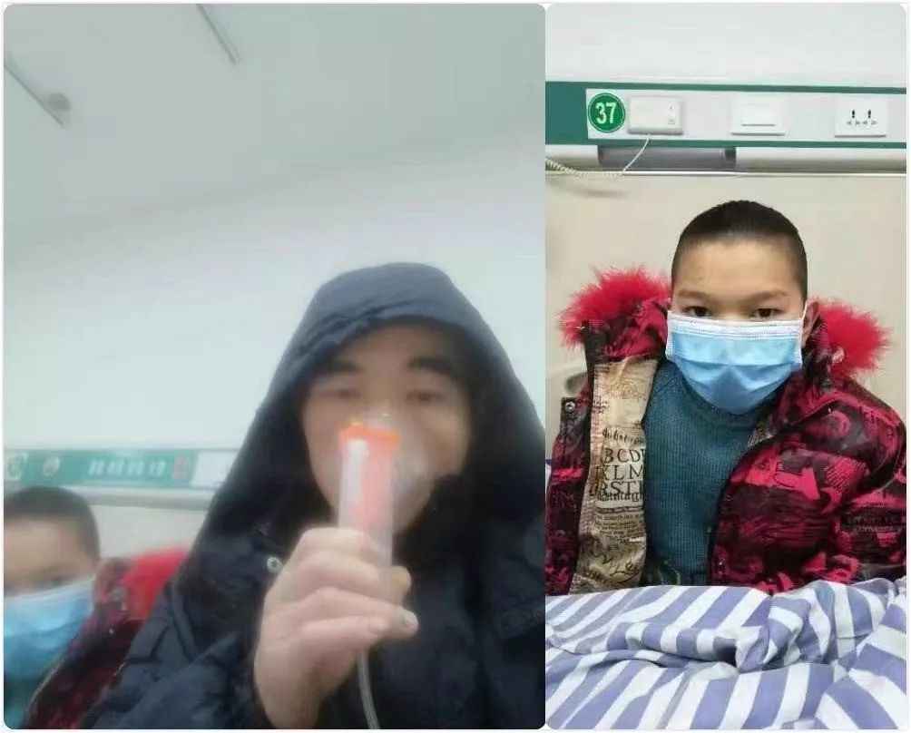
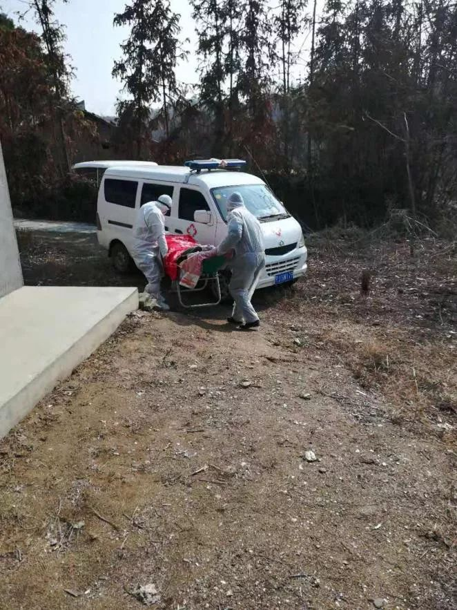

黄冈死亡脑瘫儿父亲：隔离7天，收到孩子火化委托书
原文链接 备份链接 Original 李怀 真实故事计划 真实故事计划 About Feature 每天一个打动人心的原创真实故事。 Yesterday 方青记得，29日下午，鄢小文给她打电话，“孩子终于被接走了”——他的心情”特别高 …
意识到17岁脑瘫少年鄢成被单独留在家中的时候，很多人试图挽救这条生命，但这些帮助最终没有抵达最后一公里。这个由脑瘫、自闭症和单亲父亲组成的特殊家庭的日常困境，在遇到突发疫情的乡村被放大了。
记者 | 董冀宁 陈璐
被留下的孩子走了
“孩子走了。”
1月29日下午两点半，朱文沁收到鄢小文发来的这条微信时有些诧异，起初并没细想其中的含义。她以为，鄢小文说的还是两个小时以前，鄢成被120从家里接到了镇上的隔离酒店。当时鄢小文给她打了电话，她印象很深，电话那头的鄢小文边咳嗽边说自己“特别高兴”。
朱文沁是武汉市一家特殊群体家长互助组织“蜗牛家园”的负责人，同时也是一位心智障碍孩子的母亲。自从1月23日听说鄢小文因为疑似新冠肺炎被带到乡卫生院单独隔离，同时带走了小儿子，患有重度脑瘫的鄢家大儿子鄢成独自在家，她就一直担忧，只能通过电话对村里安排照顾鄢成的人提出很多具体的要求。
比如她总是希望村医把鄢成的正脸拍给她，好确认孩子的精神状态怎么样，她还一直希望照顾鄢成的村民能持续记录鄢成的体温以及吃饭和排便的次数，尽管有一些村民连微信都不会用。
鄢小文今年49岁，之前在武汉市一所学校的厨房打工，他带着两个儿子，大儿子鄢成17岁，患有重度脑瘫，生活不能自理，小儿子鄢小伟11岁，患有自闭症。鄢家一位亲戚告诉本刊，两个孩子的母亲因为受不了小儿子再次被查出“不正常”，在小儿子1岁多时自杀了，平时一直是鄢小文一个人把两个孩子拉扯大。

鄢成（轮椅内）与弟弟小伟
朱文沁告诉本刊，她是在一次自闭症康复活动上认识了鄢小文，之后在2016年，朱文沁创办了“蜗牛家园”，鄢小文带着孩子参与进来，两家的人越发熟识了起来。1月17日，朱文沁最后一次见到鄢成，当时鄢小文带着两个儿子从武汉汉口乘坐客车，准备回老家黄冈市红安县鄢家村过年。她记得，鄢成走时还笑得很开心，鄢小文告诉她“两个孩子最近都很健康。”
但1月20日，回到老家的鄢小文突然发起了低烧，那时，武汉的疫情尚未爆发，他以为是感冒，自己到村卫生室输液。又过了三天，武汉新型冠状病毒肺炎疫情全面爆发，武汉发布“封城令”，湖北各地政府对辖区内的排查工作也相继展开。
朱文沁在23日11点接到了鄢小文的电话，“他告诉我，自己被镇卫生院诊断为疑似病例，并被卫生院隔离，第二天还要转往杏花乡卫生院，那里是红安县设置的集中收治点。”
朱文沁说，因为不知道疫情的严重程度，鄢小文那时候情绪也很低落，既担心自己，“如果我人不在了，两个孩子怎么办？”除了这种对于未知病毒的恐慌，还有一种恐慌更为具体——疾控人员一同带走了他患自闭症的小儿子，将患脑瘫的大儿子鄢成单独留在了家中。朱文沁吓了一跳，鄢成也在她家住过，她知道鄢成吃喝拉撒都离不开人。
鄢小文称，“村主任陈敬友告诉我，因为他（鄢成）有接触风险，必须在家就地隔离。”事实上，卫生院的条件确实也不好，鄢小文与另一名疑似新冠肺炎患者住在同一间病房，当时还没有出现感染症状的小儿子也和他们睡在一个屋。

被隔离的鄢小文与小儿子
此时，伴随着武汉周边乃至整个湖北省范围内陆续封路、封村，朱文沁等几位家长即使想把鄢成接出来也不可能。
1月28日，鄢小文在通过微博发出的一封求助信中写道：“由于村里人担心鄢成有被感染的可能性，从23日到27日，村里领导多次协调，仍无法找到能为鄢成解决换洗护理和一日三餐问题的照料人员。”
鄢小文和志愿者妈妈们能做的，只能是每天多打几个电话。在发出公开信之后的1月28日，从上午10点到下午5点，鄢小文给村支书打了8个电话，最短的通话31秒，最长的沟通7分23秒。但他们并不知道究竟有哪些人真正会去照顾鄢成，而每个人碎片化的反馈则让他们谁都搞不清鄢成的状况到底怎样了。
所以当29号中午朱文沁听说鄢成被转移到集中安置点的时候，朱文沁感觉自己心里也像一块大石头落了地——担心了6天的鄢成独自在家没人照顾的问题看起来已经解决了。相关图片经当地残联汇总到中国精神残疾人及亲友协会（下文简称中精协）一位负责人那里，再发到了救助鄢成微信群里的时候，她看到现场是正规的120救护车，抬担架的工作人员穿着白大褂、带着淡蓝色的防护口罩，把行动不能自理的鄢成抬到车上。

11时30分许，华河卫生院派车将鄢成接往集中监测点，12时30分许，医护人员发现鄢成呼吸停止、瞳孔放大、无脉搏和心跳，现场判定鄢成死亡。
救助群里有全国各地200多位家长，大家都很兴奋，直到朱文沁收到鄢小文那条微信“孩子走了”。她用了一分钟去思考这句话到底是什么意思，拨通了鄢小文的电话，对面是哭腔，“孩子上天堂了。”
远方的救援与最后一公里
“你知道那种感觉吗，就像是我们在救一个人，我们眼睁睁看着就要救活了，希望越来越大，结果突然被宣告死亡。”参与协调了这次全国对鄢成救援行动的广州扬爱特殊家长俱乐部理事长戴榕告诉本刊，意识到脑瘫少年鄢成被单独留在家中的时候，其实有很多人曾试图挽救这条生命。
“我们真的想了很多办法。”戴榕说，因为考虑到当地属于农村，没有NGO组织覆盖，在她23号听说这件事情的时候，就已经同中精协取得了联系，希望能够通过残联的系统对进行专案照顾，而中精协主席温洪也亲自联系了当地残联介入此事。
1月23日晚12点左右，朱文沁联系上中精协湖北站站长，对方称省残联已连夜给红安县残联打电话，县残联给村里打电话，请求村里每天给鄢成送一顿饭，而村支书当时也称已接到县残联电话。

1月24日上午，村委会与村医到家喂食、测体温。
考虑到鄢小文被隔离的特殊情况，上海一家公益组织甚至提出，是否可以提供法律援助，利用新修订的《民法通则》，为鄢成指定一位临时的“议定监护人”或“社会监护人”，“可以是他的某位亲属，也可以是村支书等村上的领导，代为行使监护人的责权。”然而，鄢成并没能等来这些措施发挥作用的那一刻。
鄢成去世后，朱文沁和其它志愿者妈妈按日期整理了所有与鄢小文和村里的通话及聊天记录。
1月23号白天，鄢小文的二姐接到弟弟电话去帮鄢成喂了一次饭，因为鄢小文的手机没电了，当晚，朱文沁联系上鄢成的大姑，又联系了大姑家的大表哥，希望能再去看一看鄢成。但大表哥说，已经是晚上8点半，太晚了，等明天再想办法去看。
24日上午，二姐再次去看望鄢成，喂了点食物，称鄢成“状态还可以”。村主任陈敬友也称自己“去喂过一次饭”；
25日，村医至家门口“看了一下没有进家”。另一位志愿者暖暖妈发微信请求村主任和镇卫生院去给孩子护理、喂饭，村主任没有回复；
26日晚，村委会、镇卫生院院长和县民政局工作人员等前去看望，给鄢成喂了蛋黄派。
鄢小文的二姐在24号之后病了，据鄢小文称，二姐24到26号都在镇卫生院输液，27日早上，二姐本来打算出门准备去看鄢成，却被二姐夫拦住。直到28日上午二姑、村主任陈敬友和村医去看鄢成，朱文沁收到反馈，鄢成“全身都是湿的” 。
二姑事后对其它媒体描述了鄢成当时的状态，“他躺在躺椅上，头悬空着，嘴巴和脸上都是脏东西，被子里面也是。我带有开水，把他嘴上脸上擦干净，换了尿不湿，喂了半杯开水，他吃了小半杯米饭，就不再吃了。”
**“从1月28日开始，鄢成无法进食了，1月28日傍晚，陈敬友带村医给鄢成喂了两杯氨基酸；1月29日上午，新请到的看护人员给鄢成喂了两杯氨基酸……”
**

1月28日晚上村主任带村医测体温
朱文沁告诉本刊，26号，鄢成本来有机会被收治，当天晚上9点，鄢成曾被民政部门安排到镇卫生院体检，朱文沁当时打电话给村支书，问能否把孩子留在镇卫生院，但对方回应，“这样一个生活不能自理的孩子，父亲是疑似新型冠状病毒患者，他是传染性的高危人群，镇卫生院并非隔离点，也没有相应防护措施，他大小便失禁，给他处理都会污染整个房间。”结果当天零点过后，鄢成再次被抬回了家中。
鄢小文的求助信中曾提到，村里没有人愿意照顾鄢成的原因是缺少必要的防护工具，“因为孩子和我密切接触，且出现过1次低烧，也进入疑似人群在家单独隔离，由于没有防护设备，所以无法安排相关人员久留照料吃喝、处理大小便及换洗照料。希望大家能捐助必要的防护物资。”在朱文沁拿到的一些救助图片中，能看到村民所能用到的防护工具只有口罩、雨衣、塑料布。鄢小文在求助信中留下了华河镇卫生院刘正磊医生的电话。但此前他在接受媒体采访时曾称，“并没有物资捐献过来”。
鄢家村位于黄冈市的西北150余公里，距离武汉120公里。一年多前，朱文沁曾经跟着鄢小文父子去过那里，对这个村子她没有过多的印象，但是显然鄢小文一家在村里的经济状况并不好，他们住在精准扶贫盖的三间平房里，没有装修，屋子里也没有取暖器。鄢成生命的最后六天，在这里度过。
红安县残联一位李姓负责人告诉本刊，县残联确实接到了上级要求，但是在具体救助过程中，残联只能起到辅助作用，他表示“因为事情尚在调查中，目前不方便透露具体做了什么”。鄢家村一位村民组长则认为，“鄢家村平时只有三位村干部，却有几十个从外面打工回来的家庭，每天光统计隔离情况和体温就要消耗巨大的精力，上面每天要查两次数据，开会时不断强调漏报瞒报的责任。同时村干部还要组织村民截断道路、设卡，这么大的疫情面前，不可能把精力全扑在他们一家身上。”
特殊家庭的悲剧
相比于外界听到鄢成去世时的愤怒，在主要由自闭症患儿家长组成的救援群里，弥漫着更多消极和悲伤的情绪。他们很多人第一次经历这样的救助，以往大都是哪个家庭破裂了，或者是经济上支撑不下去了。戴榕说，“这些妈妈们这些天说得最多的话是，如果这是我的孩子怎么办？”
在鄢成去世后，还在杏花乡卫生院隔离病房的鄢小文被要求签署面对“授权委托书”，“遗体24小时内必须火化。”鄢小文称，对方这样告诉他，“这是按照国家对疫情防控的指示和规定。”
但很快，鄢小文意识到一旦签了这个东西，就再也见不到儿子了，他给媒体记者们拉了一个群，称“刚才的授权是被迫的，我希望至少先妥善保留着儿子的遗体，让我出院后能见一面，如果有可能的话，还想把遗体捐献了。”
**这同样是一个被精心照顾了17年的生命。朱文沁认识他们父子三个快九年了，从来都没见这两个儿子身上带一点脏。“像鄢成全身不能动，但随身衣服包括枕巾，每天都换，真得难为鄢爸了。”她说不知道是不是自己同样是自闭症儿童家长的原因，她对两个孩子的印象都不错，“鄢成就是一个非常爱笑，只要你和他说话就会对你笑，见谁都喊‘妈妈’的孩子。”
**

鄢成
鄢小文从鄢成出生开始就一直带着两个孩子在武汉，朱文沁的儿子与鄢小文的小儿子鄢小伟生日只差20天。他明白鄢小文的心思，“大城市相对来说还是有更多用于康复的资源，也就意味着相对更好的康复环境，大家抱团取暖也更方便。”
和很多自闭症或是其它特殊家庭一样，他们几乎把自己的全部精力投入到了对两个孩子的康复训练当中。2016年，他们一同创办了“蜗牛家园”，将一百多平米的房子完全布置成了一个活动空间。每天下午，家长们陪伴孩子在这里做音乐训练、打非洲鼓。阳台被打通后放了一张高低床，如果一切顺利，原本再过半个多月，鄢小文父子三人就会重新安顿在那里。
2月1日上午，红安县新型冠状病毒感染的肺炎防控指挥部对外通报称，1月29日，红安县华家河镇鄢家村确诊为新冠病毒肺炎患者鄢小文的密切接触者鄢成，在该镇集中观测点房间内确认死亡，其死因正组织有关专家鉴定。
据联合调查组反馈，在此期间，鄢小文因隔离不能照料鄢成日常生活，遂委托其亲属、村干部和村医照顾，他们对鄢成虽每日均有照料，但有关干部没有做到尽心尽力、尽职尽责。华家河镇党委、政府在新型冠状病毒肺炎疫情防控期间，存在工作不实、作风不实，已经免去该镇党委书记、镇长职务。
1月31日下午国家卫生健康委召开新闻发布会，民政部基层政权建设和社区治理司司长陈越良在会上表示，民政部、国家卫生健康委近日印发的《关于进一步动员城乡社区组织开展新型冠状病毒感染的肺炎疫情防控工作的紧急通知》中，提出了更加明确的要求，要求对有成员接受隔离治疗的家庭加强关心帮扶。
戴榕说，她们心智障碍者家长群体自己也会有反思，可能每一个这样家庭的家长都明白自己对孩子意味着什么，也都明白我们的社会对于精神障碍人士的支持力度还远远不够，可是大家在平时还是难免会忽视一些问题，“这件事如果发生在平时，可能我们会想，大不了就是往村子里派去一个志愿者或者是派一辆车把孩子接出来。这固然是一起极端事件，但是这件事的发生是不是也同时意味着在大量农村环境中，可能还有类似事情发生的隐患。”
戴榕希望这起悲剧能让人们吸取教训：“这些家庭平时所面对的或许只是困难，但如果社会不重视的话，特殊的时期，困难也许就会放大为灾难。”

#我在疫情一线#
话题征稿持续进行中
《三联生活周刊》全媒体现面向所有读者征稿。包括但不限于：医护人员、病患的故事，居家自我隔离经验，专业人士对防疫工作的建议……
此次征稿形式不限：文字（1500～2500字为佳）、图片（原创拍摄）、音频视频（原创录制）都欢迎。大家携手，共度难关！注：请务必保证故事真实、客观，不造谣、不传谣。
《三联生活周刊》微信公号投稿邮箱：zhuangao@lifeweek.com.cn来稿格式：#我在疫情一线#➕标题《三联生活周刊》官方微博参与话题：#我在疫情一线#《三联生活周刊》中读APP投稿邮箱（音频投稿为主，5分钟以内为佳）zhongdu@lifeweek.com.cn
期待你的来稿！
⊙文章版权归《三联生活周刊》所有，欢迎转发到朋友圈，转载开白请联系后台。未经同意，严禁转载至网站、APP等。
原文链接 备份链接 Original 李怀 真实故事计划 真实故事计划 About Feature 每天一个打动人心的原创真实故事。 Yesterday 方青记得，29日下午，鄢小文给她打电话，“孩子终于被接走了”——他的心情”特别高 …
原文链接 备份链接 1月29日中午，湖北黄冈17岁脑瘫儿鄢成死了。晚上，他死亡的消息登上了微博热搜，引发全国关注。 同一天，因新型冠状病毒肺炎死亡的中国病例已经累计170例，共有7711人被确诊。疑似病例达12167例。 鄢成的单身父亲鄢 …
原文链接 备份链接 **作者|梁耀丹 ** 1月23日，疑似感染新冠病毒肺炎的鄢小文被带走隔离时，未曾想到这竟是与17岁的脑瘫儿子鄢成的最后一次见面。 鄢小文放心不下独自在家、生活无法自理的鄢成，于是向外界求助。接下来一周的时间里，历经 …
原文链接 备份链接 1月29日下午，湖北黄冈市农民鄢小文接到村委会通知，他17岁的大儿子鄢成刚刚死了。自从1月23日起，鄢小文和11岁自闭症小儿子因疫情防控被隔离，独留患有脑瘫的鄢成在家中，托付村委会照料。 从武汉返乡被隔离 鄢小文是黄冈 …
原文链接 备份链接 自武汉爆发新型冠状病毒疫情之后，多个国家组织起撤侨工作。对于拥有跨国婚姻的人而言，此刻是与家人一同撤离，还是坚守在国内，成为十分痛苦、但又不得不做出的决定。单读作者晓宇就是其中的一员，他的妻子、拥有英德双国籍的安娜， …